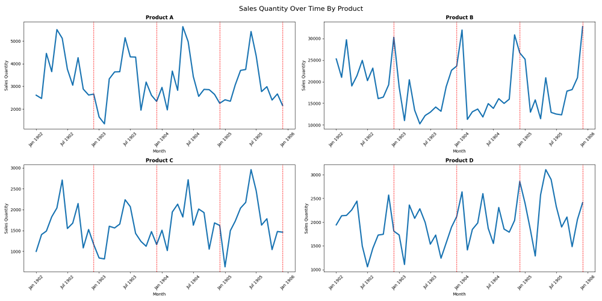
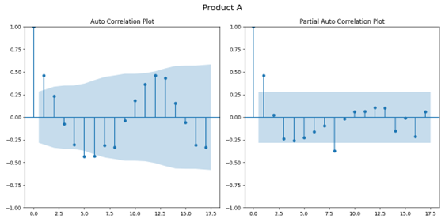
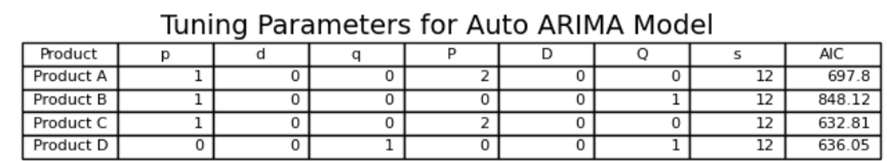
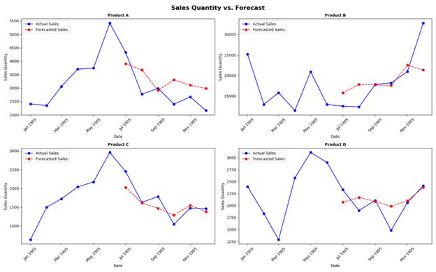
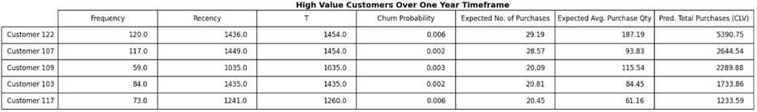
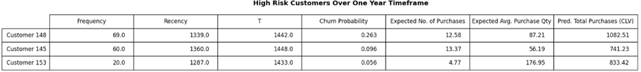

Project 1 – DS745
Matt Nelson
This project will be broken down into two parts. The first part will focus on building a time series forecast using the ARIMA model in Python. The second part involves building a Customer Lifetime Value (CLV) analysis using the BG-NBD model to gain insight on high-value and high-risk customers.
The dataset used consists of anonymized sales data for 4 products over 4 years. It is broken down by customer, sales date, and quantity sold.
The goal is to develop a 6-month forecast and measure it against actual sales values using the ARIMA model. The data is grouped by product, month, and year, with zero-filled months added to maintain continuity.
Below are the plots by product name broken down by month and year. I have additionally added red vertical lines spaced 12 months apart on each plot. The purpose of this is to highlight what looks to be seasonality in each of these products. This will be important to make note of during the tuning process of the ARIMA model. From looking at the plots, it each product looks to have a seasonal cycle of 12 months apart from Product D, which potentially looks to have a 6-month seasonal cycle.
We will then split each product into a train and test dataset with the test set being the last 6 months of data. We will use the training set to build the forecast model and the test set to measure the model’s predictions. This will give us the opportunity to see how well our forecast model does on unseen data.
Below is the auto correlation (ACF) and partial auto correlation (PACF) plot for Product A built with its training data. The purpose of each of these plots is to see how past data points correlate to a current value. The ACF plot shows how much a time series is related to its past values at different time lags, helping to find repeating patterns or trends. A PACF plot removes the effects of earlier lags, only showing the direct relationship between a point and a specific previous time step. These plots values are helpful in understanding the auto regressive (p), differencing (d), moving average (q), and seasonality (s) or the tuning parameters needed to generate an ARIMA forecast model. More on this later.
Now it is time to build a forecast model for each product. I am going to use auto.arima in Python. The benefit of this is that python selects the best tuning parameters based on the lowest AIC score. AIC is a measure complexity and accuracy of each model. The only caveat I will manually tune is s (seasonality) by the values of 0, 6, and 12 to ensure the auto.arima model captures potential seasonality in the model. After running the auto.arima model through each product’s training data, the following tuning parameters were assigned based on minimal AIC.
Looking back on the ACF and PACF plots for Product A, we see the auto tuned parameters generally make sense. First, it doesn’t look like there is a need for the time series data to be differenced as there is neither a general increase or decrease of values on either PACF or ACP plots. The PACF plot shows a large value at 1 and then generally slides back between .25 and -.25 for the rest of the plot. The suggestions that each value is slightly dependent on the previous value making the p value of 1 reasonable. Additionally, s = 12 was confirmed by the 12 month seasonality shown.
Below are 6-month Forecast vs. Actual plots for each product.
When plotting our 6-month Forecast vs. Actual, we see that the auto tuned models did a respectable job of prediction. I think there is one exception and that is the last month for Product B was drastically under forecasted. The forecast point went in the opposite direction of the actual. If this forecast were to be used for production, that could be concerning as customers would likely be shorted. Here are a few opportunities for improvement:
This is my first time using auto.arima(). Going beyond this project with further exploration, I am curious to see how the ARIMA model would fare against a time series dataset with some intermittent demand. Additionally, I believe if added variables were available that were potential leading indicators to sales qty such as customer inventory levels or customer point of sale data could drastically improve the forecast. It looks as though these could be implemented into the forecast using the ‘exogenous’ parameter in the auto.arima().
We used Product A for CLV analysis using the BG-NBD and Gamma-Gamma models. These models estimate future purchase frequency and monetary value per customer based on:
High-value customers were defined as those likely to purchase the most in the next year while having less than 1% churn risk. A table of these customers was produced.
High-risk customers were defined as those forecasted to buy >500 units but with >5% churn risk. A separate table for these customers was also provided.
Action steps:
To conclude, effective business tools can be developed utilized using sales data. We looked at how a sales forecast can be built using the ARIMA model along with being able to provide insight on high risk and high value customers using Customer Lifetime Value analysis.